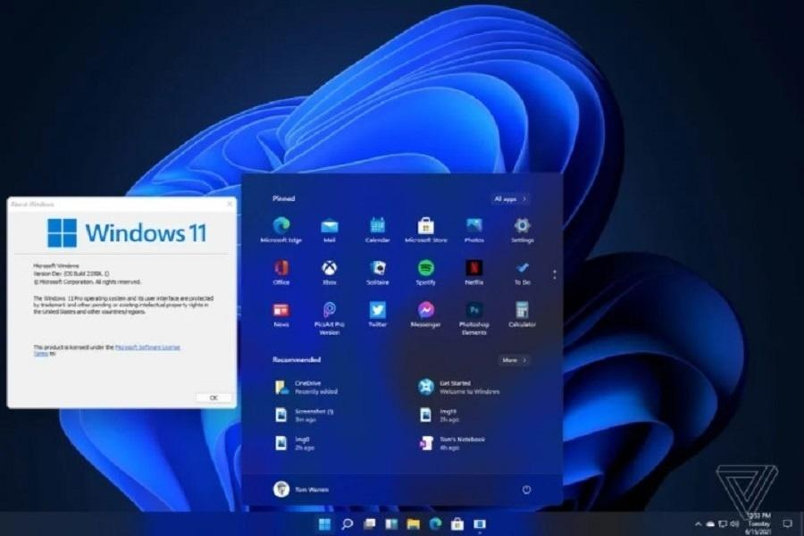

AULA 4
Sistema Operacional Windows – O Gerente do Computador
Nesta aula, vamos conhecer o "chefe" do computador: o Sistema Operacional Windows! Ele é como um gerente que organiza tudo para você usar o computador facilmente.
O que é um Sistema Operacional?
Um Sistema Operacional (SO) é o software mais importante do computador. Sem ele, o hardware não saberia o que fazer! Ele gerencia todos os programas e o hardware, permitindo que você interaja com a máquina.
- Gerencia Hardware: Faz a CPU, memória, disco rígido e outros componentes trabalharem juntos.
- Gerencia Softwares: Permite que você instale e use seus aplicativos favoritos.
- Gerencia Arquivos: Ajuda a organizar seus documentos, fotos e vídeos.
O Windows é o sistema operacional mais usado no mundo!


Primeiros Passos no Windows: Área de Trabalho e Ícones
Ao ligar o computador, a primeira coisa que você vê é a **Área de Trabalho (Desktop)**. Pense nela como o seu quarto digital, onde você organiza suas coisas.
- Ícones: São pequenas imagens que representam programas, arquivos ou pastas. Clicar duas vezes em um ícone geralmente abre o que ele representa.
- Barra de Tarefas: Fica na parte inferior da tela. Mostra os programas abertos e tem o botão 'Iniciar'.
- Menu Iniciar: O botão com o logo do Windows. É o seu 'catálogo' para encontrar todos os programas, configurações e arquivos.
- Relógio e Notificações: No canto inferior direito, você encontra a hora, data e avisos importantes do sistema.
Abrindo e Fechando Programas
É muito fácil abrir e fechar programas no Windows:
- Abrir: Clique duas vezes no ícone do programa na Área de Trabalho, ou clique uma vez no ícone na Barra de Tarefas, ou encontre-o no Menu Iniciar e clique.
- Fechar: Procure o 'X' no canto superior direito da janela do programa e clique nele.
- Minimizar/Maximizar: Ao lado do 'X', você encontra botões para minimizar (esconder na barra de tarefas) ou maximizar (ocupar a tela toda) a janela.